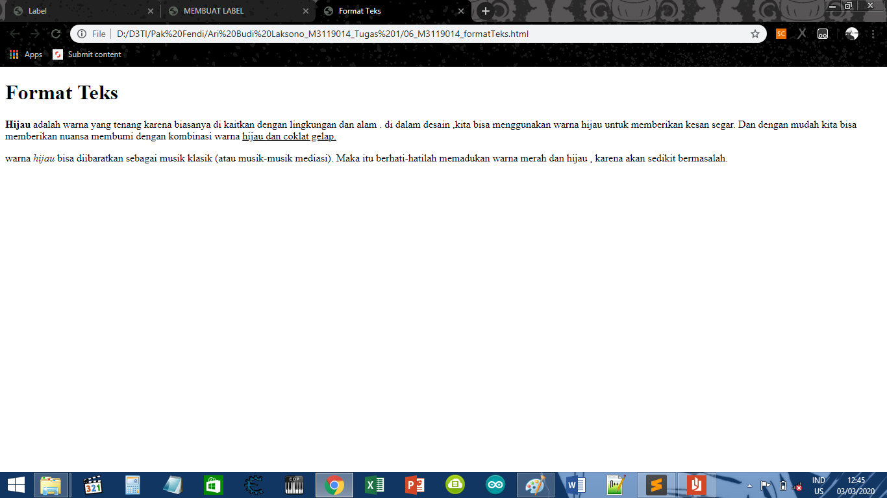

KODE PROGRAM
========================================================================================================================
HASIL PROGRAMHijau adalah warna yang tenang karena biasanya di kaitkan dengan lingkungan dan alam . di dalam desain ,kita bisa menggunakan warna hijau untuk memberikan kesan segar. Dan dengan mudah kita bisa memberikan nuansa membumi dengan kombinasi warna hijau dan coklat gelap.
warna hijau bisa diibaratkan sebagai musik klasik (atau musik-musik mediasi). Maka itu berhati-hatilah memadukan warna merah dan hijau , karena akan sedikit bermasalah.
========================================================================================================================
SCREENSHOT 
========================================================================================================================
KESIMPULAN
Dari koding di atas, Dapat disimpulkan bahwa Teks tersebut dapat diformat supaya kelihatan lebih menonjol.
Jadi kita dapat membuat suatu teks menjadi bold(tebal),italic(miring),dan underline(miring).
========================================================================================================================